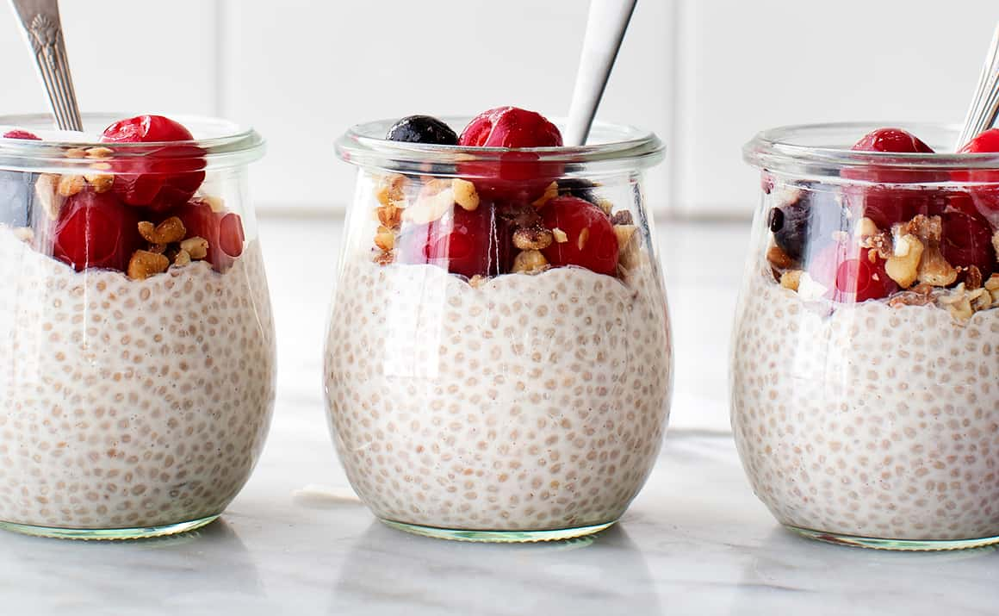

Chia Pudding

Something something something i forgot now
Ingredients
- 2 Tbsp Chia Seeds
- 1/2 Cup (120mL) Milk
- 1/2 to 1 Tsp Maple Syrup
- 3/4 Cup(180mL) Low Fat Greek Yougurt
- 1/4 cup(60mL or 40g) of a fruit of your choice
Makes 1 Serving
Steps
- Mix together all the ingredients for the chia pudding in a bowl or a jar
- When the mixture is well combined, let it sit for 5 minutes and then mix again. Let set in the fridge for at least 2 hours (or overnight)
- Once the chia pudding is ready to serve, make the yogurt layer and spoon on top of the chia pudding. Add the toppings and enjoy!
Back to Home